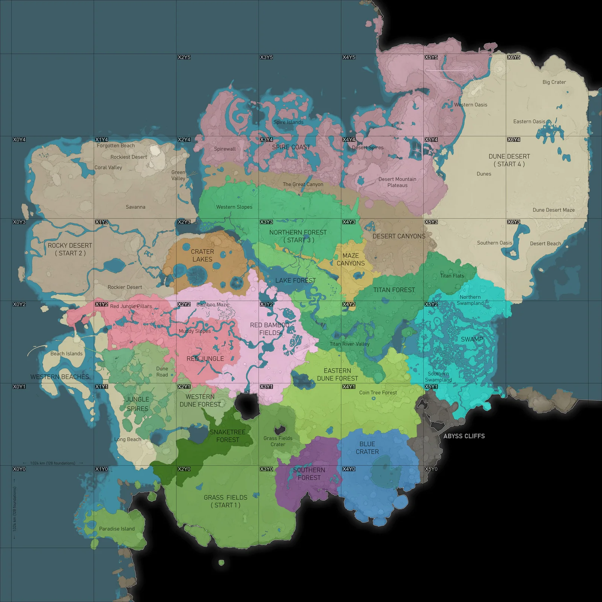

허브 위치로 고민하지 마세요
허브(The HUB)는 언제든 철거하고 다시 지을 수 있습니다. 철거하면 건설에 쓴 철광석 20개를 돌려받고, 업그레이드와 마일스톤 진행도는 전부 유지됩니다. 다른 건물과 똑같이 자유롭게 옮길 수 있습니다.
그래서 진짜 결정은 "허브를 어디 놓나"가 아니라 "본 공장을 어디에 세우나"입니다. 허브는 마일스톤 납품 단말일 뿐이고, 공장이 그 옆에 있을 필요도 없습니다.
→ 착륙 지점 근처에 일단 짓고 게임을 진행하세요. 부지는 아래 입지 선정을 보고 정하면 됩니다.
입지 선정
공략 5종 교차 검증시작 지점은 4곳 중에서 고릅니다. 그 안에서 본 공장을 세울 자리는 아래 지도의 핀을 참고하세요. 좌표계는 남서쪽 모서리가 X0Y0, 한 칸이 1.024 km로 게임 내 지도와 동일합니다.

| 시작 지점 | 좌표 | 지형 | 강점 | 약점 |
|---|---|---|---|---|
| 바위 사막 Rocky Desert | X0Y3–X1Y4 | 완만·넓음 | 석탄·황이 가깝고 해안으로 물·원유 접근 — 초반 두 벽을 동시에 해소 | 바이오매스 부족, 미관이 단조로움 |
| 북부 숲 Northern Forest | X2Y3–X4Y4 | 험함 (중앙만 평탄) | 순수 노드 밀집 + 맵 중앙. 자원 효율 최상 | 지형 난이도 최상. 중앙 포켓을 못 찾으면 최악 |
| 잔디 평야 Grass Fields | X2Y0 | 최대 평지 | 정지작업 거의 불필요. 초보 접근성 최고 | 물 부족 — 석탄 발전에 치명적. 노드 대부분 불순~일반 |
| 사구 사막 Dune Desert | X5Y3–X6Y5 | 광활·평탄 | 석탄·황 즉시 접근, 물 가까움 | 바이오매스 극빈 → 초반 전력이 가장 빡셈 |
착륙 후 첫 10분
티어 0 시작튜토리얼이 시키는 대로만 따라가면 자원 위치를 모른 채 허브를 짓게 됩니다. 순서를 하나만 바꾸면 됩니다 — 짓기 전에 정찰.
짓기 전에 스캔한다 ← 스킵해도 이건 똑같이 중요
자원 스캐너(V 길게)로 철·구리·석회석 위치를 먼저 확인하세요. 스킵 시작은 허브를 바로 지을 재료가 있어서 더 성급해지기 쉽습니다.
근처에 순수(Pure) 철 노드가 있는지 특히 잘 보세요 — 바로 채굴기를 꽂을 수 있으니 노드 선택의 가치가 첫 순간부터 발생합니다.
허브를 짓는다 — 들고 있는 철광 20개가 정확히 그 비용
스킵해도 허브는 직접 지어야 합니다. 시작 인벤토리의 철광석 20개가 건설비와 정확히 일치합니다.
세 자원의 대략적인 무게중심, 그리고 평지. 완벽할 필요 없습니다 — 허브는 나중에 자유롭게 옮길 수 있습니다.
휴대용 채굴기 4개를 즉시 꽂는다
시작 인벤토리에 휴대용 채굴기가 4개 있습니다. 아무 노드에나 꽂아두면 걸어다니는 동안 알아서 캡니다. 놀리는 만큼 그대로 손해입니다.
첫 자동화를 바로 세운다
채굴기 Mk.1·벨트·제련기·제작기가 이미 해금돼 있으니 아래 배치를 그대로 세우세요. 튜토리얼 경로는 HUB 5까지 가야 여기 도달합니다.
석회석 라인을 우선하세요. 아래 표에서 보듯 철판은 이미 넘치고 콘크리트만 크게 모자랍니다.
| 필요 부품 | 요구 | 시작 보유 | 부족 | 조달 |
|---|---|---|---|---|
| 철판 (Iron Plate) | 100 | 129 | 충족 | — |
| 철봉 (Iron Rod) | 100 | 60 | 40 | 철 잉곳 40 |
| 콘크리트 (Concrete) | 200 | 58 | 142 | 석회석 426 |
드롭포드를 철거한다
빌드건(F)으로 드롭포드를 철거하면 철광석 20개가 나옵니다. 허브 건설비가 정확히 이것입니다.
짓기 전에 주변을 스캔한다 ← 여기가 핵심
자원 스캐너(V 길게)로 철·구리·석회석의 위치를 먼저 확인하세요. 튜토리얼은 이 단계를 시키지 않지만, 안 하면 허브를 엉뚱한 곳에 짓게 됩니다.
확인할 것: 세 자원이 걸어서 오갈 만한 거리에 모여 있는가, 그 사이에 평지가 있는가.
허브를 세 노드의 가운데에 짓는다
철·구리·석회석 노드의 대략적인 무게중심, 그리고 평지. 이 두 조건이면 충분합니다. 완벽할 필요 없습니다 — 언제든 옮길 수 있으니까요.
초반에는 자원을 손으로 캐서 걸어서 납품합니다. 왕복 거리가 곧 시간입니다.
바이오매스를 미리 모아둔다
HUB 2에서 바이오매스 연소기가 풀립니다. 그때 연료가 없으면 멈춰서 잎을 주우러 다녀야 합니다.
이동하면서 나뭇잎·나무를 계속 주우세요. 특히 사구 사막에서 시작했다면 주변에 식생이 거의 없으니 더 부지런히 모아야 합니다.
HUB 업그레이드 1–6
티어 0 전체각 단계의 정확한 요구량과 해금 항목입니다. 3단계까지는 손 제작으로 충분하고, 4단계부터 손으로 만들기가 버거워집니다.
저장 상자 · 휴대용 채굴기
철광석을 손으로 캐서 제련 없이 시작합니다. 휴대용 채굴기를 노드에 꽂아두면 걸어다니는 동안 알아서 캡니다 — 반드시 쓰세요.
제련기 · 바이오매스 연소기
첫 전력이 들어옵니다. 연소기는 손으로 연료를 채워야 하니 모아둔 바이오매스를 넣으세요. 제련기를 철광 노드 근처가 아니라 허브 근처에 두면 납품이 편합니다.
제작기 · 전주
구리가 필요해집니다. 기계는 전주에 물리세요 — 기계끼리 직접 연결하면 나중에 한 대를 철거할 때 하류가 전부 정전됩니다. 이 습관은 끝까지 갑니다.
컨베이어 벨트
요구량이 갑자기 뜁니다. 석회석도 처음 필요해집니다. 여기서부터 손 제작이 버거워지니 제련기와 제작기를 여러 대 돌려두고 다른 일을 하세요. 벨트는 풀렸지만 아직 채굴기가 없어 완전 자동화는 안 됩니다.
채굴기 Mk.1 · 바이오매스 연소기 추가 ← 첫 자동화
여기가 진짜 시작입니다. 채굴기 + 벨트가 모두 갖춰져 손 채굴을 그만둘 수 있습니다. 아래 첫 자동화 배치대로 세우세요.
우주 엘리베이터
티어 1이 열립니다. 자동화 라인이 돌고 있으면 금방 통과합니다. 우주 엘리베이터는 넓은 평지가 필요하니 자리를 넉넉히 잡으세요.
| 원자재 | 총 필요량 | 계산 근거 |
|---|---|---|
| 철광석 (Iron Ore) | 533 | 철봉 225개(1:1) + 철판 205개(3:2 → 잉곳 308) |
| 구리광석 (Copper Ore) | 130 | 전선 120개(1:2 → 잉곳 60) + 케이블 70개(전선 140 → 잉곳 70) |
| 석회석 (Limestone) | 240 | 콘크리트 80개 (3:1) |
첫 자동화 배치
HUB 5 이후채굴기 하나로 철판과 철봉을 동시에 뽑는 최소 구성입니다. 티어 1에서 어차피 옮기게 되므로 예쁘게 짓지 말고 빠르게 세우세요.